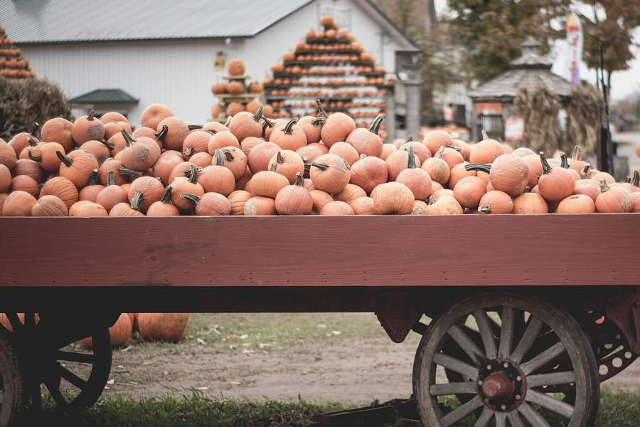

The school newspaper of Pebblewick School, written by pupils for everyone
Issue 21Friday 2 October 2026Price: one smile
Meet Big Bert, the pumpkin that took over the school garden
One seed, one sunny corner and a lot of watering cans. This is how the garden club grew the biggest pumpkin our school has ever seen.
By Noor and Sami, class 5. A 3-minute read.

Pumpkins on a farm after the harvest. Big Bert would need a cart all to himself.
One flat, white seed started it all. In May, the garden club planted it in a pot on the classroom window. About ten days later, two round leaves pushed up through the soil.
In June the little plant moved outside, into the sunny corner by the fence. "We gave it lots of compost," says Sami. "Pumpkins are very hungry plants."
By July the plant had big, rough leaves and long vines. Bright yellow flowers opened in the mornings. Bees flew from flower to flower, and soon a tiny green pumpkin started to grow behind one of the flowers.
That tiny pumpkin was Big Bert.
In August Bert grew so fast that we measured him every morning before lessons.
The garden club put straw under Bert, so he stayed dry and clean. They turned the vines away from the football pitch. They even made a little sign: Please do not sit on Bert.
In late September Bert turned deep orange, and his stalk went hard and woody. That is how gardeners know a pumpkin is ripe. Mr Ashdown cut the stalk with big garden scissors, and four pupils rolled Bert onto a wheelbarrow.
On the school kitchen scales, Bert weighed 38 kilograms. That is about as heavy as a big dog.
So what happens now? The school kitchen will turn Bert into soup for everyone. The garden club will save his seeds, and next May they plan to grow Big Bert's little brother.